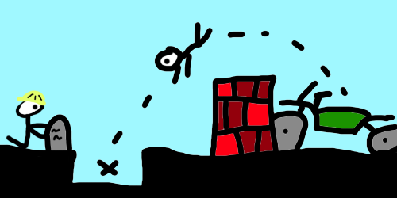
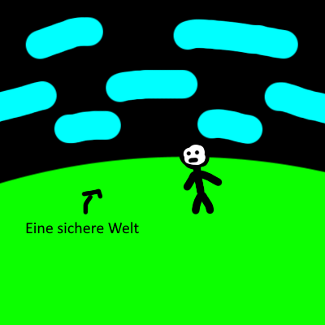
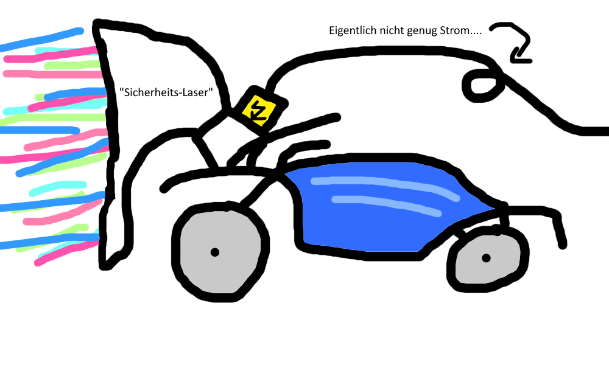

Motorräder. Es gibt sie in vielen verschiedenen Formen und Bauweisen, doch sie haben alle ein großes Problem, wenn sie auf ein Hindernis treffen, ist für die Sicherheit des Fahrers nicht mehr garantiert.
Symbolbild:

Das ist selbstverständlich viel zu gefährlich. Deswegen muss dieses Problem gelöst werden. Motorräder sollen nicht mehr gegen Objekte fahren. Dabei gibt es mehrere Arten dieses Problem zu lösen, einer wäre: einfach kein Motorrad fahren lassen, dass das nicht praktikabel ist, bedarf ja keinerlei Erklärung, der zweite Weg wäre, dass wir versuchen, dass es keine Objekte mehr gibt gegen die ein Motorrad überhaupt fahren kann.
Die Frage ist also:Wie kann ich Objekte aus dem Weg eines Motorrads entfernen? Da ich in meinem Konzept gnädig bin, entferne ich keine Objekte als Vorbeugung eines potentiellen Unfalls, da dass ja auch die Motorräder mit einschließt und sich somit die Schlange in den eigenen Schwanz beißen würde.

Wir benötigen also eine Möglichkeit Objekte im Weg eines Motorrads zu entfernen. Da sich untröstlicherweise nicht genau vorhersagen lässt wo und wann ein beliebiges Motorrad fährt müssen wir also eine Apparatur erschaffen die Objekte genau dann entfernt wenn ein Motorrad dagegen fahren würde, so eine Art Tunnelbohrmaschine auf Steroiden.
Allerdings sind Tunnelbohrmaschinen leider etwas zu langsam (Weltrekord: 2,33 m/Stunde = 0,00233 km/h (2,33/60/60*3,6)) für unseren Anwendungszweck. Denn niemand hat Lust mit 0,00233 km/h zu "fahren".
Die Lösung: Wir brauchen mehr Energie! Eine vielversprechende Option wäre ein Lasercutter (Studie) der das Material vor sich verdampft. In der verlinkten Studie, die vom Ulsan National Institute of Science & Technology in Südkorea durchgeführt wurde, konnten die Wissenschaftler eine Geschwindigkeit von 4,5 m/s = 16,2 km/h erreichen bei einer Oberfläche von 0,38 mm2. Dafür haben die Forscher mit einem 9kW Laser durch Basalt "gebohrt".
Wir tun einfach mal so, als wenn sich dieses Experiment ohne Probleme skalieren lässt und dass die Leistung des Lasers proportional zur Abtragungsrate ist.
Also können wir mit so einem 9 Kilowatt Laser mit einer Geschwindigkeit von 4,5 Metern pro Sekunde eine Fläche von 0,38 mm2 abtragen. Um diese "Einheit" zu normalisieren rechnen wir einmal 0,38mm2 auf 1 mm2 hoch. Das ergibt den Faktor 2,63. Also benötigen wir 2,6 mal mehr Energie. Dann kommen wir auf 23,4 Kilowatt. Um jetzt die Zahlen alle nochmal schön zu machen (was ich gleich mache wird jedem Physiklehrer nen sauberen Herzinfarkt geben); wir haben folgendes Verhältnis 23,4 kW - 4,5 m/s - 1mm2.
Wenn wir jetzt die Fläche erhöhen möchten, sagen wir auf entspannte 2,5 x 2,5 Meter, also 6.250.000 mm2 (2,5x2,5(m2)x1000000(=> mm2)). Das ist ein Faktor von 6,25 Millionen, das heißt wir benötigen 6,25 Millionen mal mehr Leistung um mit 4,5 Metern pro Sekunde unseren Basalt verdampfen zu lassen. Das wären dann 23,4 kW x 6.250.000 = 146.250.000 kW. Das sind dann chillige 146,25 Gigawatt. Zum Vergleich das gesamte deutsche Stromnetz hat eine Leistung von 264 Gigawatt(Stand: 2024) .
ABER; Das setzt voraus, dass wir nur mit läppischen 16 km/h herumdüsen. Eine BMW S 1000 RR hat laut Hersteller eine Höchstgeschwindigkeit von 303 km/h. Sagen wir nur zur Sicherheit wir rechnen mit 350 km/h für den Fall, dass die gesamte Dampffläche von einem Material eingenommen wird, dass schlimmer als Basalt zu verdampfen ist. Das ergibt nochmal einen Faktor von etwa 22 (350/16). Also haben wir einen Energiebedarf von 146 GW x 22 = 3.212 GW oder auch 3,2 Terawatt. 2022 hat die Welt ingesamt 24.398 Terawattstunden benötigt um hier einmal den Durchschnitt auszurechnen müssen wir durch die Tage und Stunden teilen: 24.398/365/24 = 2,78 = 2,8 Terawatt Durchschnittsbedarf.
Nun da wir den gesamten Energieoutput der Erde in ein einziges Sportmotorrad umgeleitet haben können wir uns an das Design machen:

Fazit: Wir müssen global noch mehr Energie bereitstellen, damit ein einzelnes Motorrad sehr sicher fahren kann.
Zurück zum Archiv